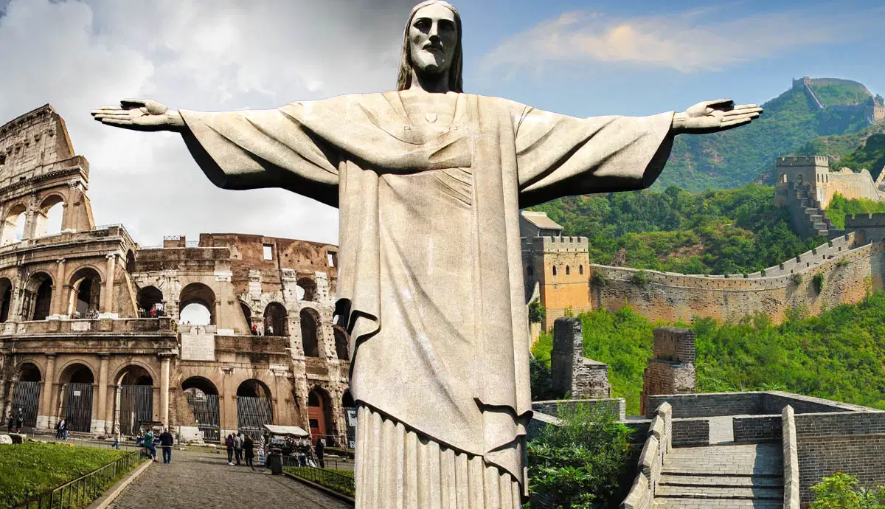

From ancient ruins to towering monuments, the Seven Wonders of the World represent humanity's greatest architectural achievements..
The list of the original seven wonders of the world was made more than 2000 years ago by adventurous Hellenic travelers who marveled at the world’s most incredible man-made constructions. Since then, most of the wonders in the original list have been destroyed, aside from the Great Pyramid of Giza. In 2001, Swiss-born Canadian filmmaker Bernard Weber set up the New7Wonders Foundation to find a new seven wonders of the world for the modern era, asking members of the public to participate in a global vote. After months of deliberating, debating, and shortlists, these are the impressive architectural feats that made the final cut.